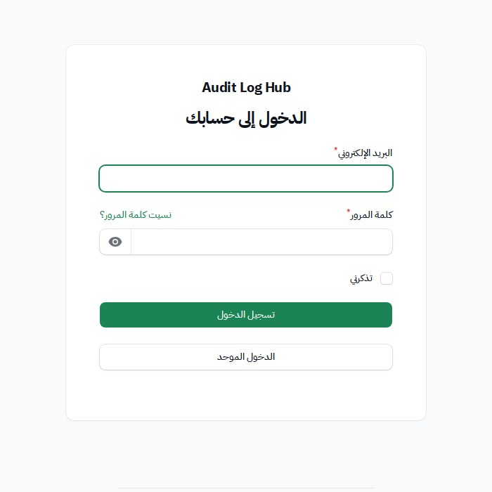
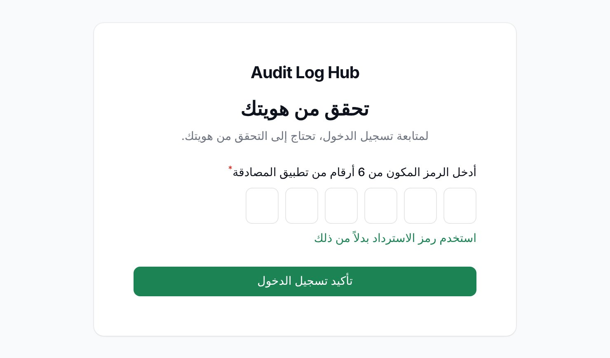
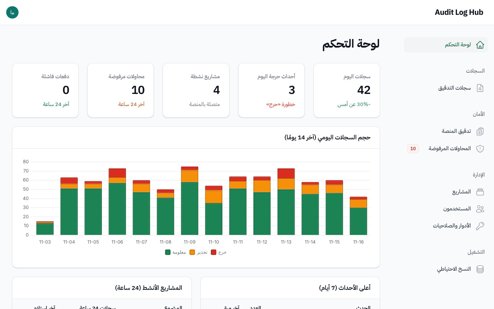
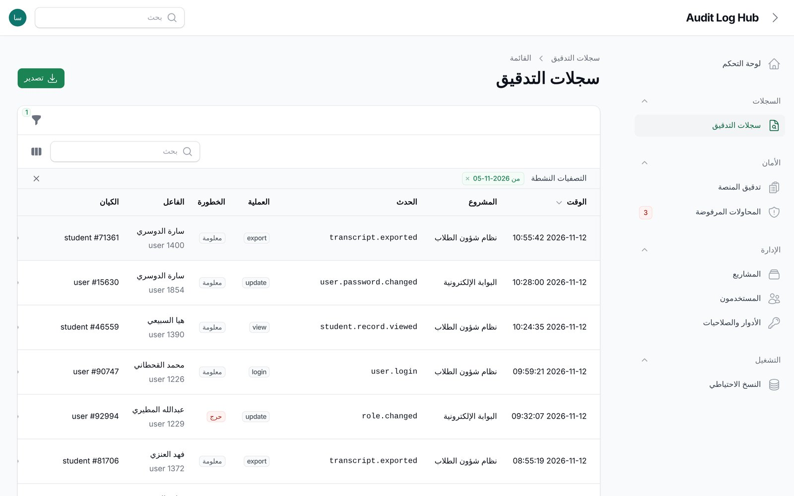
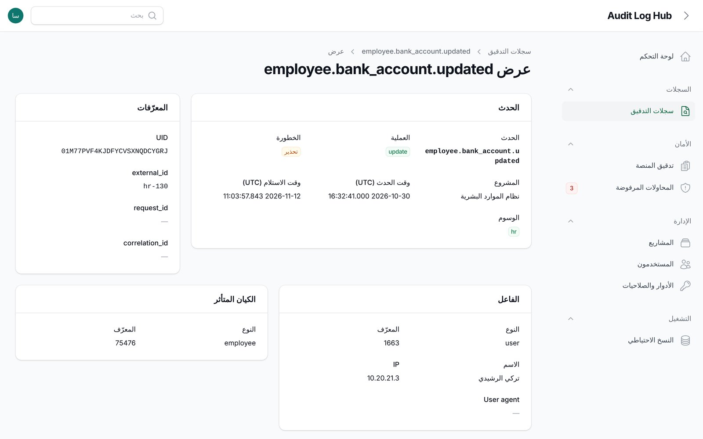
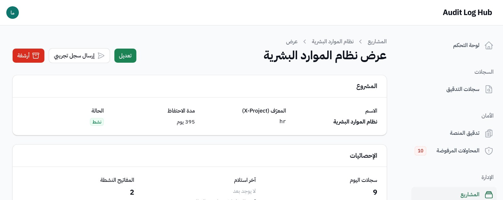
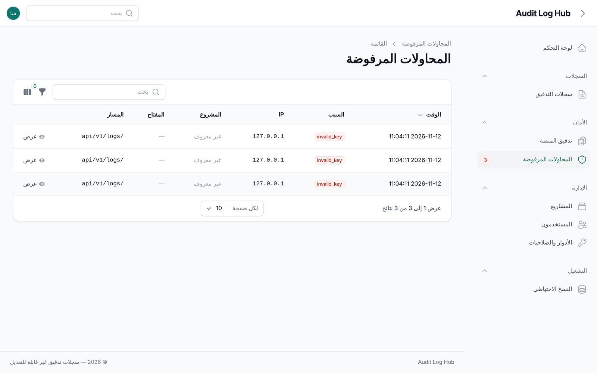
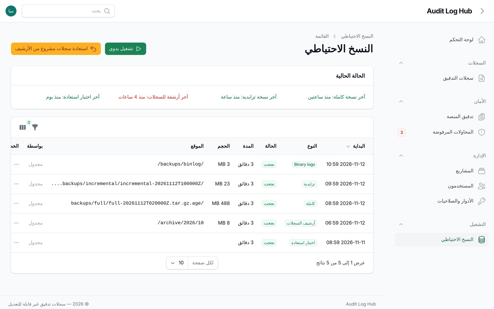

تعرّف هذه الوثيقة بمنصة سجلات التدقيق المركزية كما هي مبنية فعليًا: التحديات التي تعالجها، وأدوار مستخدميها وصلاحياتهم، وواجهاتها وعملياتها الرئيسية، ودورة حياة السجل فيها من الإرسال حتى الأرشفة. والغرض منها تعريف الجهة المستفيدة بالمنتج، وتمكينها من مراجعته وإبداء الملاحظات قبل التشغيل الفعلي.
منصة سجلات التدقيق المركزية منصة رقمية تستقبل سجلات التدقيق من أنظمة الجهة كافة عبر واجهة برمجية موحّدة، وتحفظها في مستودع واحد آمن لا يقبل التعديل ولا الحذف، وتتيح البحث فيها وتصديرها وفق صلاحيات محددة لكل مستخدم.
تقوم المنصة على ثلاثة مبادئ: ثبات السجل بعد حفظه حتى على مدير النظام، وعزل بيانات كل نظام عن غيره، وتوثيق كل وصول مرفوض وكل إجراء إداري داخل المنصة نفسها. وتسهم بذلك في رفع موثوقية الأدلة الرقمية، وتعزيز الحوكمة والرقابة، وتيسير أعمال التحقق والمراجعة.
يوضح الآتي أبرز التحديات القائمة في إدارة سجلات التدقيق، والقيمة المضافة التي يحققها المنتج في معالجة كلٍّ منها:
للمنصة خمسة أدوار: ثلاثة على مستوى المنصة كاملة، واثنان على مستوى مشروع واحد. ويحدد الدور ما يراه المستخدم في اللوحة وما يستطيع فعله.
| الدور | ما الذي يقوم به | الصلاحيات |
|---|---|---|
| مدير المنصة | إدارة المشاريع والمفاتيح والمستخدمين والأدوار، ومتابعة النسخ الاحتياطي والطوابير. | المنصة كاملةجميع الصلاحياتكشف البيانات الحساسةالنسخ والاستعادةالمستخدمون والأدوار |
| مدقق المنصة | الاطلاع على سجلات جميع المشاريع وتصديرها لأغراض التدقيق، دون أي صلاحية تعديل. | جميع المشاريععرض المشاريععرض السجلاتتصدير السجلات |
| مسؤول الأمن | متابعة المحاولات المرفوضة، وتقييد مفاتيح الوصول بعناوين IP محددة. | جميع المشاريععرض المشاريع والمفاتيحقوائم IPالمحاولات المرفوضة |
| مالك المشروع | إدارة مفاتيح مشروعه وأعضائه، والاطلاع على سجلاته وتصديرها. | مشروعه فقطتعديل المشروعإنشاء المفاتيح وتدويرها وإلغاؤهاقوائم IPعرض السجلات وتصديرهاإضافة الأعضاء |
| مشاهد المشروع | البحث في سجلات مشروعه وتصديرها. | مشروعه فقطعرض المشروععرض السجلات وتصديرها |
المصادقة الثنائية إلزامية للأدوار على مستوى المنصة ولكل من يملك صلاحية كشف البيانات الحساسة. ويمكن إنشاء أدوار مخصصة، ولا يستطيع أي مستخدم منح صلاحية لا يملكها. ولا يملك أي دور تعديل السجلات أو حذفها.
لوحة التحكم عربية بالكامل، ومبنية وفق «كود المنصات» الصادر عن هيئة الحكومة الرقمية، وتعرض لكل مستخدم ما يخصه فقط، والأوقات فيها بتوقيت الرياض.








يمرّ كل سجل بسبع مراحل متسلسلة، ولكل مرحلة جهة مسؤولة عنها:
تحدد الخطة ثلاثة مستويات للخطورة دون معايير لاختيارها؛ لذا اعتُمدت المعايير الآتية، وأساسها أثر الإجراء على سرية البيانات وسلامتها وتوافرها، ومدى حاجته إلى المتابعة. ويحدد النظام المرسل المستوى لكل حدث لأنه الأعلم بسياقه، والمستوى الافتراضي «معلومة».
| المستوى | متى يُستخدم | أمثلة | أثره في المنصة |
|---|---|---|---|
معلومةinfo | إجراء اعتيادي ضمن سير العمل لا يستدعي المتابعة. | إنشاء البيانات أو تعديلها، والدخول الناجح، والعرض والتصدير الاعتيادي. | المستوى الافتراضي عند عدم تحديده. |
تحذيرwarning | إجراء مشروع لكنه حساس أو غير معتاد، ويستحق المراجعة. | محاولة دخول فاشلة، وتعديل البيانات المالية أو الشخصية، ورفض الطلبات، والتصدير الكبير. | يُميَّز بلونه في الجدول والرسم البياني، ويمكن التصفية به. |
حرجcritical | إجراء يمسّ الصلاحيات أو الأمن، أو قد يُلحق ضررًا جسيمًا، ويستدعي المراجعة الفورية. | منح الأدوار والصلاحيات أو سحبها، وتعطيل الضوابط الأمنية، والحذف الجماعي. | يُحتسب في مؤشر «الأحداث الحرجة اليوم» ويظهر بالأحمر. |
أُعدّت بيئة تجريبية تضم أربعة أنظمة (شؤون الطلاب، والموارد البشرية، والبوابة الإلكترونية، والمشتريات)، ونحو 800 سجل، وحسابًا لكل دور. ونرجو عند المراجعة التركيز على الآتي:
| المراجِع | محور المراجعة |
|---|---|
| مدير المنصة | وضوح إنشاء المشروع والمفتاح، وإدارة المستخدمين والصلاحيات. |
| مدقق المنصة | كفاية البحث والتصفية، ووضوح تفاصيل السجل، وصيغ التصدير. |
| مسؤول الأمن | وضوح أسباب الرفض، وكفاية التنبيهات. |
| مالك المشروع | إدارة المفاتيح ودليل الربط. |
| فريق تطوير النظام المتصل | سهولة الربط، ووضوح رسائل الخطأ في الواجهة البرمجية. |
منصة سجلات التدقيق المركزية منصة رقمية تجمع أثر الإجراءات المهمة في أنظمة الجهة في مستودع واحد: ترسل الأنظمة سجلاتها، وتتحقق المنصة منها وتحفظها بشكل لا يقبل التعديل ولا الحذف، ويبحث المستخدمون فيها ويصدّرونها كلٌّ في حدود صلاحيته.
وتحقق المنصة قيمتها من خلال ثبات الأدلة الرقمية، وإحكام الرقابة على الوصول بالصلاحيات الدقيقة والمصادقة الثنائية والدخول الموحّد، واستمرارية البيانات بالأرشفة اليومية والنسخ المشفّر واختبارات الاستعادة الدورية، مع سهولة الربط للأنظمة المتصلة.